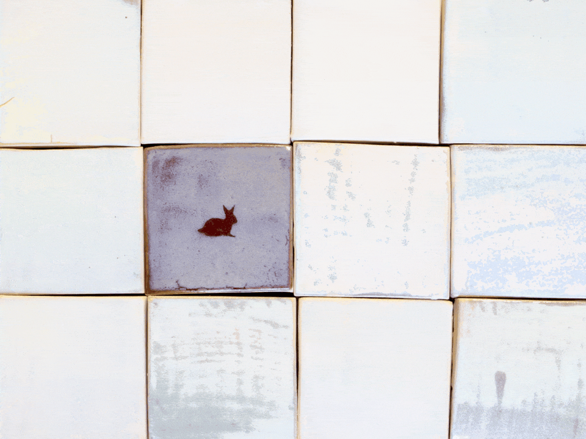
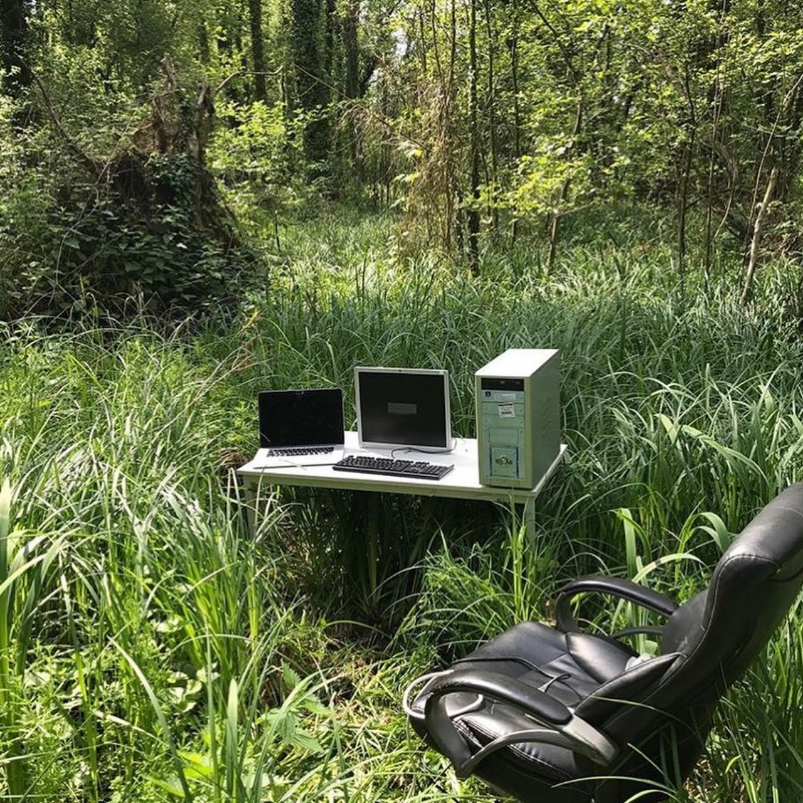

I think I'm better now. I still watch a couple dance with their smiling children in a park and I want to tell them how easy it is for all of us to wake up next to someone who never will again. I am like you. I still want to feast on the happiest moments of strangers. I don't know what this makes men like us except bound to our loneliness, crawling on our hands and knees again through the southern mud that women we loved once pushed between their black toes, until we reach the river. press our lips to the bank. whisper their names into the delicate brown earth and pray the water parts this time. Every mother we gave over to death, walking from its cool mouth. A wet and thrashing catfish in their arms. They will ask
 have you eaten, child? you closed your eyes during another one of my sweet songs and I thought you would never wake
-- Hanif Abdurraqib, "Ode to Kanye West In Two Parts, Ending In A Chain Of Mothers Rising From The River"